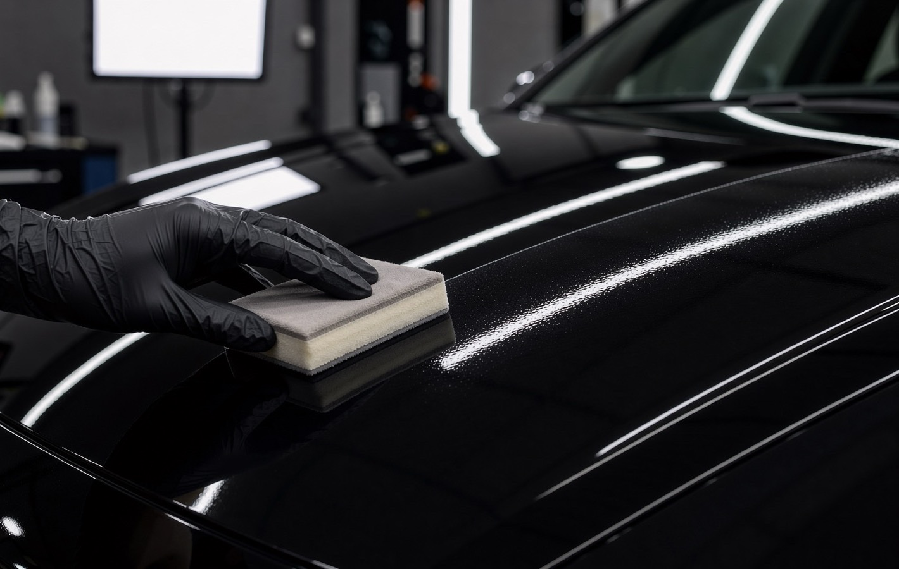

Mycie nawet w kwadrans
Brud trzyma się słabo, więc zwykle wystarczy spłukanie i delikatne mycie dwoma wiadrami.
Dla kierowców, którzy chcą, żeby auto wyglądało świetnie bez spędzania sobót z gąbką w ręku. Przed nałożeniem powłoki odświeżamy lakier, a po odbiorze dostajesz plan pielęgnacji.

Powłoka to cienka, twarda warstwa na lakierze. Nie jest pancerzem, ale sprawia, że brud trzyma się słabiej, a połysk zostaje dłużej.
Brud trzyma się słabo, więc zwykle wystarczy spłukanie i delikatne mycie dwoma wiadrami.
Krople zbierają się i spływają, zamiast zasychać na lakierze w białe plamy.
Powłoka ogranicza wpływ słońca i chemii drogowej na lakier.
Przed powłoką robimy korektę, więc zabezpieczamy lakier w najlepszym możliwym stanie.
Pomiary lakieru i zdjęcia przekazujesz przyszłemu kupującemu jako dowód dbałości.
Sprawdzamy, jak powłoka się trzyma, i odświeżamy ją, gdy trzeba.
Uczciwie: to zależy od eksploatacji i pielęgnacji. Auto garażowane, myte ręcznie i bez szczotek zachowuje efekt znacznie dłużej niż auto, które stoi pod chmurką i jeździ przez myjnię szczotkową.
Po oględzinach mówimy, czego możesz się spodziewać przy Twoim stylu jazdy. Nie obiecujemy liczby lat na wyrost, bo żaden producent nie zna Twojego parkingu.
Powłoka chroni nie tylko lakier. Lupy pokazują, co zyskuje każdy element.
Woda zbiera się w krople i spływa razem z kurzem. Mycie trwa kwadrans.
Woda spływa z szyb już przy prędkości miejskiej, wycieraczki pracują rzadziej.
Koła myjesz zwykłym szamponem, bez agresywnej chemii.
Przewiń, żeby rozłożyć powłokę na warstwy. Każda ma jedno zadanie.
Oglądamy lakier w świetle studyjnym, mierzymy jego grubość w kilkudziesięciu punktach i robimy zdjęcia do raportu.
Myjemy auto ręcznie, usuwamy smołę, opiłki żelaza i osady. Lakier musi być idealnie czysty, inaczej powłoka zamknie brud pod spodem.
Polerujemy, aż lakier odzyska połysk. Zakres ustalamy wcześniej: od lekkiego odświeżenia po korektę wieloetapową.
Odtłuszczamy lakier i nakładamy powłokę panel po panelu, w stałej temperaturze. Każdy element sprawdzamy pod lampą.
Auto stoi w ciepłej hali, żeby powłoka związała. Przy odbiorze pokazujemy efekt, przekazujemy raport i plan pielęgnacji.
Właściciel mył auto co tydzień, a lakier i tak matowiał. Zobacz więcej realizacji

„Myślałem, że ceramika to marketing. Po pół roku myję auto wężem i miękką rękawicą, a sąsiedzi pytają, czy to nowy lakier. Najbardziej doceniam to, że dostałem jasną instrukcję, czego nie robić.”
Więcej o tym, czego unikać, przeczytasz w poradniku 5 błędów przy myciu auta, które matowią lakier.
Cena zależy od wielkości auta, stanu lakieru i zakresu korekty przed powłoką. Podajemy jedną kwotę po krótkiej rozmowie lub oględzinach, zanim zaczniemy pracę.
Zwykle 2 do 3 dni, razem z korektą lakieru i utwardzaniem w ciepłej hali. Dokładny termin oddania podajemy przy wycenie.
Trwałość zależy od eksploatacji i pielęgnacji, dlatego nie podajemy liczby lat jako pewnika. Po oględzinach mówimy, czego się spodziewać przy Twoim stylu jazdy, a coroczny przegląd pokazuje, jak powłoka się trzyma.
Nie. Powłoka chroni przed brudem, chemią i słońcem, ale kamień uderzający z prędkością autostradową ją przebije. Przed odpryskami chroni folia PPF, którą można połączyć z ceramiką.
Bezdotykową tak, szczotkową nie polecamy. Szczotki rysują lakier niezależnie od powłoki i skracają jej życie.
Wycena po krótkiej rozmowie. Jeśli wolisz pokazać auto, oględziny w studiu trwają 30 minut i niczego nie kosztują.
Oddzwaniamy w ciągu 2 godzin roboczych z widełkami ceny i wolnym terminem.